import numpy as np
import pandas as pd
import os
import json
import requests
import shutil
import matplotlib.pyplot as plt
import seaborn as sns
from sklearn.preprocessing import normalize
import plotly.express as px
from _cde_compute_edges_from_nodes import *
pd.set_option('display.max_columns', None)
pd.set_option('display.max_rows', None)
# suppress warnings
import warnings
warnings.filterwarnings("ignore")Distance Analysis: skin-celldive-ge
Analyze and visualize cell-to-nearest-endothelial-cell distance distributions for the
skin-celldive-ge dataset.
basepath = "/u/yashjain/hra-cell-distance-analysis/data"
dataset_dir = "skin-celldive-ge"
data_filedir = os.path.join("data-processed-nodes-with-harmonized-cell-types", dataset_dir)
output_edge_dir = os.path.join("data-processed-edges", dataset_dir)
figures_output_dir = "generated-figures"# Function to load your data
def load_data(path, edges=False):
if edges:
column_names = ['cell_id', 'x1', 'y1', 'z1', 'x2', 'y2', 'z2']
data = pd.read_csv(path, header=None, names=column_names)
else:
data = pd.read_csv(path)
return data# Function to read all files ending with "-nodes.csv" in the `data_filedir` directory into a single DataFrame.
# Another additional column `Dataset` is added to identify the dataset name which comes from the filename before the `-nodes.csv` suffix.
# Additionally, function reads all files ending with "-edges.csv" in the `output_edge_dir` directory into a single DataFrame.
# Three additional columns are added "Dataset", "Anchor Cell Type", and "Anchor Cell Type Level" to identify the dataset name, anchor cell type, and anchor cell type level respectively which come from the filename before the `.csv` suffix.
# The three additional columns are created by splitting the filename on the `-` character, and extracting the relevant parts.
# On splitting, the first part is the dataset name, second part is the anchor cell type level, and third part is the anchor cell type, and last part is the `edges` suffix.
# When reading files, check if the file has the correct format (i.e., ends with `-edges.csv`).
# Additionally, the function merges the edges DataFrame with the nodes DataFrame to get the cell type information for the anchor cells.
# This is done by reading the corresponding nodes file from the `data_filedir` directory for each edges file, and merging it with the edges DataFrame on the `cell_id` column.
# The merged DataFrame contains the edges with additional columns for the cell type information.
# The function returns three DataFrames:
# 1. `merged_nodes`: DataFrame containing all nodes with an additional column `Dataset`.
# 2. `merged_edges`: DataFrame containing all edges with additional columns `Dataset`, `Anchor Cell Type`, and `Anchor Cell Type Level`.
# 3. `merged_nodes_for_all_edges`: DataFrame containing all edges with additional columns `Dataset`, `Anchor Cell Type`, `Anchor Cell Type Level`, and the cell type information for cells.
def read_all_edge_datasets(basepath, data_filedir, output_edge_dir):
all_nodes_files = []
all_edges_files = []
all_nodes_edges_files = []
for file in os.listdir(os.path.join(basepath, output_edge_dir)):
if file.endswith("-edges.csv"):
file_path = os.path.join(basepath, output_edge_dir, file)
dataset_name, anchor_cell_type_level, anchor_cell_type = file.replace("-edges.csv", "").split('-')
edges_df = load_data(file_path, edges=False)
edges_df['Dataset'] = dataset_name
edges_df['Anchor Cell Type'] = anchor_cell_type
edges_df['Anchor Cell Type Level'] = anchor_cell_type_level
edges_df.rename(columns={"distance": "Distance"}, inplace=True) # Rename column "distance" to "Distance".
all_edges_files.append(edges_df)
# Read the corresponding nodes file from data_filedir to get the cell type information
nodes_file_path = os.path.join(basepath, data_filedir, f"{dataset_name}-nodes.csv")
nodes_df = load_data(nodes_file_path)
nodes_df['Dataset'] = dataset_name
all_nodes_files.append(nodes_df)
# Add a new 'cell_id' column to nodes_df
nodes_df['cell_id'] = range(len(nodes_df))
# Set 'cell_id' column as index for nodes_df
nodes_df.set_index('cell_id', inplace=True)
# Merge edges_df with nodes_df to get the cell type information for the anchor cells
edges_nodes_df = pd.merge(edges_df, nodes_df[['Level Three Cell Type', 'Level Two Cell Type', 'Level One Cell Type']], how='left', left_on='cell_id', right_index=True)
all_nodes_edges_files.append(edges_nodes_df)
merged_edges = pd.concat(all_edges_files, ignore_index=True)
merged_nodes = pd.concat(all_nodes_files, ignore_index=True)
merged_nodes_for_all_edges = pd.concat(all_nodes_edges_files, ignore_index=True)
return merged_nodes, merged_edges, merged_nodes_for_all_edgesdef create_directory(directory):
if not os.path.exists(directory):
os.makedirs(directory)
print(f"Directory '{directory}' created successfully.")
else:
print(f"Directory '{directory}' already exists.")Get initial statistics and identify endothelial cell categories for dataset.
df_all_nodes, df_all_edges, df_all_edges_with_cell_types = read_all_edge_datasets(basepath, data_filedir, output_edge_dir)df_all_nodes.head(5)| x | y | z | Original Cell Type | Level Three Cell Type | Level Three CL Label | Level Three CL ID | CL_Match/3 | Level Two Cell Type | Level Two CL Label | Level Two CL ID | CL_Match/2 | Level One Cell Type | Level One CL Label | Level One CL ID | CL_Match/1 | Dataset | |
|---|---|---|---|---|---|---|---|---|---|---|---|---|---|---|---|---|---|
| 0 | 188.500 | 342.500 | 10.0 | T-Killer | t cell:cd8+ | CD8-positive, alpha-beta T cell | CL:0000625 | skos:exactMatch | t cell | T cell | CL:0000084 | skos:exactMatch | immune cell | leukocyte | CL:0000738 | skos:exactMatch | region_1 |
| 1 | 136.600 | 161.400 | 20.0 | T-Killer | t cell:cd8+ | CD8-positive, alpha-beta T cell | CL:0000625 | skos:exactMatch | t cell | T cell | CL:0000084 | skos:exactMatch | immune cell | leukocyte | CL:0000738 | skos:exactMatch | region_1 |
| 2 | 437.500 | 363.500 | 20.0 | T-Killer | t cell:cd8+ | CD8-positive, alpha-beta T cell | CL:0000625 | skos:exactMatch | t cell | T cell | CL:0000084 | skos:exactMatch | immune cell | leukocyte | CL:0000738 | skos:exactMatch | region_1 |
| 3 | 203.500 | 512.000 | 20.0 | T-Killer | t cell:cd8+ | CD8-positive, alpha-beta T cell | CL:0000625 | skos:exactMatch | t cell | T cell | CL:0000084 | skos:exactMatch | immune cell | leukocyte | CL:0000738 | skos:exactMatch | region_1 |
| 4 | 155.579 | 204.895 | 0.0 | T-Helper | t cell:cd4+ | CD4-positive, alpha-beta T cell | CL:0000624 | skos:exactMatch | t cell | T cell | CL:0000084 | skos:exactMatch | immune cell | leukocyte | CL:0000738 | skos:exactMatch | region_1 |
# Print the total number of unique cell types per dataset. Compute separately for each cell type column (Level One Cell Type, Level Two Cell Type, Level Three Cell Type, Original Cell Type).
print("Total number of unique cell types per cell type annnotation level:")
unique_cell_types = {
'Original Cell Type': df_all_nodes['Original Cell Type'].nunique(),
'Level Three Cell Type': df_all_nodes['Level Three Cell Type'].nunique(),
'Level Two Cell Type': df_all_nodes['Level Two Cell Type'].nunique(),
'Level One Cell Type': df_all_nodes['Level One Cell Type'].nunique()
}
for cell_type, count in unique_cell_types.items():
print(f"{cell_type}: {count}")Total number of unique cell types per cell type annnotation level:
Original Cell Type: 8
Level Three Cell Type: 8
Level Two Cell Type: 4
Level One Cell Type: 3# Save the unique cell types containing "endothelial" in name per cell type column (Level One Cell Type, Level Two Cell Type, Level Three Cell Type, Original Cell Type) to a dictionary where the key is the level and the value is a list of unique cell types.
endothelial_cell_types = {
'Original Cell Type': df_all_nodes[df_all_nodes['Original Cell Type'].str.contains("endothelial", case=False, na=False)]['Original Cell Type'].unique().tolist(),
'Level Three Cell Type': df_all_nodes[df_all_nodes['Level Three Cell Type'].str.contains("endothelial", case=False, na=False)]['Level Three Cell Type'].unique().tolist(),
'Level Two Cell Type': df_all_nodes[df_all_nodes['Level Two Cell Type'].str.contains("endothelial", case=False, na=False)]['Level Two Cell Type'].unique().tolist(),
'Level One Cell Type': df_all_nodes[df_all_nodes['Level One Cell Type'].str.contains("endothelial", case=False, na=False)]['Level One Cell Type'].unique().tolist()
}
print("\nEndothelial cell types per cell type annotation level:")
for level, cell_types in endothelial_cell_types.items():
print(f"\n{level}:")
for cell in cell_types:
print(f" - {cell}")
Endothelial cell types per cell type annotation level:
Original Cell Type:
- Endothelial
Level Three Cell Type:
- endothelial cell
Level Two Cell Type:
- endothelial cell
Level One Cell Type:
- endothelial celltype_field_list = ["Level Three Cell Type", "Level Two Cell Type", "Level One Cell Type"] # Skipping Original Cell Type as it is not a hierarchical level.
# Define the anchor cell type (type of endothelial cell) for each level in type_field_list based on available categories in the previous cell. The distance analysis at all three levels will be limited to the specified anchor cell type.
anchor_cell_type_dict = {
'Level Three Cell Type': 'endothelial cell',
'Level Two Cell Type': 'endothelial cell',
'Level One Cell Type': 'endothelial cell'
}Process datasets to add region information to Nodes files.
df_all_nodes.head()| x | y | z | Original Cell Type | Level Three Cell Type | Level Three CL Label | Level Three CL ID | CL_Match/3 | Level Two Cell Type | Level Two CL Label | Level Two CL ID | CL_Match/2 | Level One Cell Type | Level One CL Label | Level One CL ID | CL_Match/1 | Dataset | |
|---|---|---|---|---|---|---|---|---|---|---|---|---|---|---|---|---|---|
| 0 | 188.500 | 342.500 | 10.0 | T-Killer | t cell:cd8+ | CD8-positive, alpha-beta T cell | CL:0000625 | skos:exactMatch | t cell | T cell | CL:0000084 | skos:exactMatch | immune cell | leukocyte | CL:0000738 | skos:exactMatch | region_1 |
| 1 | 136.600 | 161.400 | 20.0 | T-Killer | t cell:cd8+ | CD8-positive, alpha-beta T cell | CL:0000625 | skos:exactMatch | t cell | T cell | CL:0000084 | skos:exactMatch | immune cell | leukocyte | CL:0000738 | skos:exactMatch | region_1 |
| 2 | 437.500 | 363.500 | 20.0 | T-Killer | t cell:cd8+ | CD8-positive, alpha-beta T cell | CL:0000625 | skos:exactMatch | t cell | T cell | CL:0000084 | skos:exactMatch | immune cell | leukocyte | CL:0000738 | skos:exactMatch | region_1 |
| 3 | 203.500 | 512.000 | 20.0 | T-Killer | t cell:cd8+ | CD8-positive, alpha-beta T cell | CL:0000625 | skos:exactMatch | t cell | T cell | CL:0000084 | skos:exactMatch | immune cell | leukocyte | CL:0000738 | skos:exactMatch | region_1 |
| 4 | 155.579 | 204.895 | 0.0 | T-Helper | t cell:cd4+ | CD4-positive, alpha-beta T cell | CL:0000624 | skos:exactMatch | t cell | T cell | CL:0000084 | skos:exactMatch | immune cell | leukocyte | CL:0000738 | skos:exactMatch | region_1 |
# Iterate through the df_all_data dataframe to create new column "Unique Region" based on the "Dataset" column.
# The "Unique Region" column is created by mapping the region names based on the full dataset name.
df_all_nodes['Unique Region'] = df_all_nodes['Dataset']
# df_all_nodes['Unique Region'] = df_all_nodes['Dataset'].map(region_map)
# df_all_nodes['Unique Region'] = df_all_nodes['Dataset'].str.split('-').str[1].map(region_map)
# Check if the new columns are created correctly.
df_all_nodes[['Dataset', 'Unique Region']].head(5)| Dataset | Unique Region | |
|---|---|---|
| 0 | region_1 | region_1 |
| 1 | region_1 | region_1 |
| 2 | region_1 | region_1 |
| 3 | region_1 | region_1 |
| 4 | region_1 | region_1 |
# Print all unique regions in the data.
print("\nUnique Regions in the data:")
print(df_all_nodes['Unique Region'].unique())
# Print the total number of unique regions.
print(f"Total number of unique regions: {df_all_nodes['Unique Region'].nunique()}")
# Print number of unique datasets per unique region.
print("\nNumber of unique datasets per unique region:")
for region in df_all_nodes['Unique Region'].unique():
num_datasets = df_all_nodes[df_all_nodes['Unique Region'] == region]['Dataset'].nunique()
print(f"{region}: {num_datasets}")
Unique Regions in the data:
['region_1' 'region_10' 'region_11' 'region_2' 'region_3' 'region_4'
'region_5' 'region_7' 'region_8' 'region_9']
Total number of unique regions: 10
Number of unique datasets per unique region:
region_1: 1
region_10: 1
region_11: 1
region_2: 1
region_3: 1
region_4: 1
region_5: 1
region_7: 1
region_8: 1
region_9: 1Process datasets to add region information to Edges files.
df_all_edges.head(5)| cell_id | x1 | y1 | z1 | x2 | y2 | z2 | Distance | Dataset | Anchor Cell Type | Anchor Cell Type Level | |
|---|---|---|---|---|---|---|---|---|---|---|---|
| 0 | 0 | 188.500 | 342.500 | 10.0 | 198.4000 | 341.800 | 10.0 | 9.924717 | region_1 | endothelial cell | Level Three Cell Type |
| 1 | 4 | 155.579 | 204.895 | 0.0 | 156.5000 | 201.500 | 1.0 | 3.657084 | region_1 | endothelial cell | Level Three Cell Type |
| 2 | 5 | 107.500 | 223.500 | 0.0 | 95.6667 | 215.667 | 1.0 | 14.226134 | region_1 | endothelial cell | Level Three Cell Type |
| 3 | 6 | 180.593 | 226.519 | 0.0 | 191.1670 | 226.667 | 1.0 | 10.622212 | region_1 | endothelial cell | Level Three Cell Type |
| 4 | 7 | 188.500 | 226.778 | 0.0 | 191.1670 | 226.667 | 1.0 | 2.850475 | region_1 | endothelial cell | Level Three Cell Type |
# Process the edge data to create new columns "Unique Region" based on the "Dataset" column, similar to how it was done for the node data.
df_all_edges['Unique Region'] = df_all_edges['Dataset']
# df_all_edges['Unique Region'] = df_all_edges['Dataset'].map(region_map)
# Check if the new columns are created correctly.
df_all_edges[['Dataset', 'Unique Region']].head(5)| Dataset | Unique Region | |
|---|---|---|
| 0 | region_1 | region_1 |
| 1 | region_1 | region_1 |
| 2 | region_1 | region_1 |
| 3 | region_1 | region_1 |
| 4 | region_1 | region_1 |
# Print all unique regions in the data.
print("\nUnique Regions in the data:")
print(df_all_edges['Unique Region'].unique())
# Print the total number of unique regions.
print(f"Total number of unique regions: {df_all_edges['Unique Region'].nunique()}")
# Print number of unique datasets per unique region.
print("\nNumber of unique datasets per unique region:")
for region in df_all_edges['Unique Region'].unique():
num_datasets = df_all_edges[df_all_edges['Unique Region'] == region]['Dataset'].nunique()
print(f"{region}: {num_datasets}")
Unique Regions in the data:
['region_1' 'region_10' 'region_11' 'region_2' 'region_3' 'region_4'
'region_5' 'region_7' 'region_8' 'region_9']
Total number of unique regions: 10
Number of unique datasets per unique region:
region_1: 1
region_10: 1
region_11: 1
region_2: 1
region_3: 1
region_4: 1
region_5: 1
region_7: 1
region_8: 1
region_9: 1df_all_edges_with_cell_types['Unique Region'] = df_all_edges_with_cell_types['Dataset']
# df_all_edges_with_cell_types['Unique Region'] = df_all_edges_with_cell_types['Dataset'].map(region_map)
# Check if the new columns are created correctly.
df_all_edges_with_cell_types[['Dataset', 'Unique Region']].head(5)| Dataset | Unique Region | |
|---|---|---|
| 0 | region_1 | region_1 |
| 1 | region_1 | region_1 |
| 2 | region_1 | region_1 |
| 3 | region_1 | region_1 |
| 4 | region_1 | region_1 |
df_all_nodes.head(1)| x | y | z | Original Cell Type | Level Three Cell Type | Level Three CL Label | Level Three CL ID | CL_Match/3 | Level Two Cell Type | Level Two CL Label | Level Two CL ID | CL_Match/2 | Level One Cell Type | Level One CL Label | Level One CL ID | CL_Match/1 | Dataset | Unique Region | |
|---|---|---|---|---|---|---|---|---|---|---|---|---|---|---|---|---|---|---|
| 0 | 188.5 | 342.5 | 10.0 | T-Killer | t cell:cd8+ | CD8-positive, alpha-beta T cell | CL:0000625 | skos:exactMatch | t cell | T cell | CL:0000084 | skos:exactMatch | immune cell | leukocyte | CL:0000738 | skos:exactMatch | region_1 | region_1 |
df_all_edges.head(1)| cell_id | x1 | y1 | z1 | x2 | y2 | z2 | Distance | Dataset | Anchor Cell Type | Anchor Cell Type Level | Unique Region | |
|---|---|---|---|---|---|---|---|---|---|---|---|---|
| 0 | 0 | 188.5 | 342.5 | 10.0 | 198.4 | 341.8 | 10.0 | 9.924717 | region_1 | endothelial cell | Level Three Cell Type | region_1 |
df_all_edges_with_cell_types.head(1)| cell_id | x1 | y1 | z1 | x2 | y2 | z2 | Distance | Dataset | Anchor Cell Type | Anchor Cell Type Level | Level Three Cell Type | Level Two Cell Type | Level One Cell Type | Unique Region | |
|---|---|---|---|---|---|---|---|---|---|---|---|---|---|---|---|
| 0 | 0 | 188.5 | 342.5 | 10.0 | 198.4 | 341.8 | 10.0 | 9.924717 | region_1 | endothelial cell | Level Three Cell Type | t cell:cd8+ | t cell | immune cell | region_1 |
Node Analysis
# Plot number of cells per cell type in the same plot. Color by cell type and unique region. Output figure saved in existing `figures_output_dir`.
def plot_cells_per_celltype(df, type_field, output_dir):
plt.figure(figsize=(20, 8))
plt.rcParams["svg.fonttype"] = 'none' # to store text as text, not as path
sns.countplot(data=df, x=type_field, palette='Spectral', hue='Unique Region')
plt.title(f'Number of Cells per {type_field} in `{dataset_dir}`')
plt.xticks(rotation=90)
plt.tight_layout()
plt.savefig(os.path.join(output_dir, f'{dataset_dir}_cells_per_celltype_{type_field}.png'), dpi=300,
bbox_inches='tight',
pad_inches=0.5)
plt.savefig(os.path.join(output_dir, f'{dataset_dir}_cells_per_celltype_{type_field}.svg'), dpi=300,
bbox_inches='tight',
pad_inches=0.5)
plt.legend(title='Unique Region', bbox_to_anchor=(0.85, 1), loc='upper left')
plt.xlabel(type_field)
# For numbers on y-axis, do not use scientific notation.
plt.ticklabel_format(style='plain', axis='y')
# Set y-axis label
plt.ylabel('Number of Cells')
plt.grid(axis='y', linestyle='--', alpha=0.7)
plt.tight_layout()
# Show the plot
plt.show()
plt.close()
for type_field in type_field_list:
plot_cells_per_celltype(df_all_nodes, type_field, os.path.join(basepath, figures_output_dir))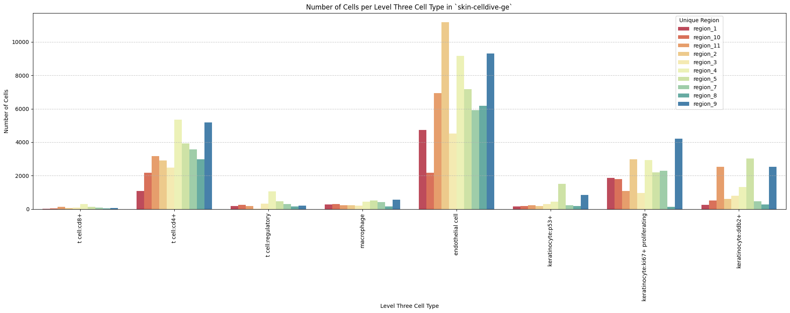
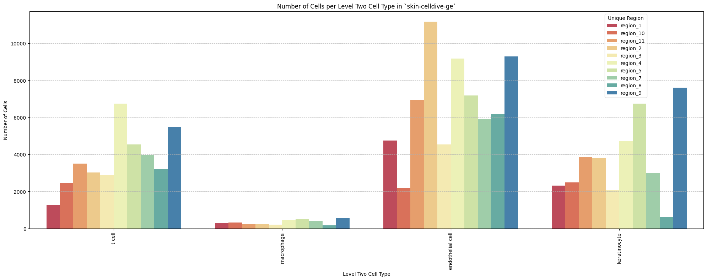
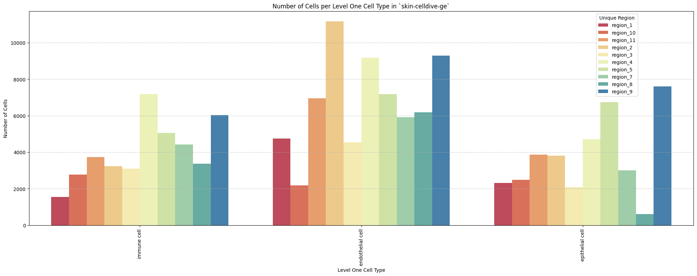
Distance Analysis
# Get mean, median, minimum, maximum distance per unique region per anchor cell type.
df_distance_stats = df_all_edges_with_cell_types.groupby(['Unique Region', 'Anchor Cell Type', 'Anchor Cell Type Level']).agg(
mean_distance=('Distance', 'mean'),
median_distance=('Distance', 'median'),
min_distance=('Distance', 'min'),
max_distance=('Distance', 'max')
).reset_index()
# Print the first few rows of the distance statistics DataFrame.
df_distance_stats| Unique Region | Anchor Cell Type | Anchor Cell Type Level | mean_distance | median_distance | min_distance | max_distance | |
|---|---|---|---|---|---|---|---|
| 0 | region_1 | endothelial cell | Level One Cell Type | 10.339891 | 9.627938 | 0.321218 | 35.549790 |
| 1 | region_1 | endothelial cell | Level Three Cell Type | 10.339891 | 9.627938 | 0.321218 | 35.549790 |
| 2 | region_1 | endothelial cell | Level Two Cell Type | 10.339891 | 9.627938 | 0.321218 | 35.549790 |
| 3 | region_10 | endothelial cell | Level One Cell Type | 11.731047 | 10.629954 | 0.500000 | 52.648323 |
| 4 | region_10 | endothelial cell | Level Three Cell Type | 11.731047 | 10.629954 | 0.500000 | 52.648323 |
| 5 | region_10 | endothelial cell | Level Two Cell Type | 11.731047 | 10.629954 | 0.500000 | 52.648323 |
| 6 | region_11 | endothelial cell | Level One Cell Type | 11.084870 | 9.023278 | 0.457433 | 61.572358 |
| 7 | region_11 | endothelial cell | Level Three Cell Type | 11.084870 | 9.023278 | 0.457433 | 61.572358 |
| 8 | region_11 | endothelial cell | Level Two Cell Type | 11.084870 | 9.023278 | 0.457433 | 61.572358 |
| 9 | region_2 | endothelial cell | Level One Cell Type | 11.321866 | 8.963334 | 0.000000 | 63.424592 |
| 10 | region_2 | endothelial cell | Level Three Cell Type | 11.321866 | 8.963334 | 0.000000 | 63.424592 |
| 11 | region_2 | endothelial cell | Level Two Cell Type | 11.321866 | 8.963334 | 0.000000 | 63.424592 |
| 12 | region_3 | endothelial cell | Level One Cell Type | 9.743145 | 8.308900 | 0.264401 | 82.592541 |
| 13 | region_3 | endothelial cell | Level Three Cell Type | 9.743145 | 8.308900 | 0.264401 | 82.592541 |
| 14 | region_3 | endothelial cell | Level Two Cell Type | 9.743145 | 8.308900 | 0.264401 | 82.592541 |
| 15 | region_4 | endothelial cell | Level One Cell Type | 8.399101 | 7.280110 | 0.000000 | 60.328360 |
| 16 | region_4 | endothelial cell | Level Three Cell Type | 8.399101 | 7.280110 | 0.000000 | 60.328360 |
| 17 | region_4 | endothelial cell | Level Two Cell Type | 8.399101 | 7.280110 | 0.000000 | 60.328360 |
| 18 | region_5 | endothelial cell | Level One Cell Type | 13.177577 | 8.661502 | 0.377260 | 128.413083 |
| 19 | region_5 | endothelial cell | Level Three Cell Type | 13.177577 | 8.661502 | 0.377260 | 128.413083 |
| 20 | region_5 | endothelial cell | Level Two Cell Type | 13.177577 | 8.661502 | 0.377260 | 128.413083 |
| 21 | region_7 | endothelial cell | Level One Cell Type | 11.388868 | 9.381152 | 0.137033 | 58.771590 |
| 22 | region_7 | endothelial cell | Level Three Cell Type | 11.388868 | 9.381152 | 0.137033 | 58.771590 |
| 23 | region_7 | endothelial cell | Level Two Cell Type | 11.388868 | 9.381152 | 0.137033 | 58.771590 |
| 24 | region_8 | endothelial cell | Level One Cell Type | 14.008464 | 7.565769 | 0.590302 | 84.945093 |
| 25 | region_8 | endothelial cell | Level Three Cell Type | 14.008464 | 7.565769 | 0.590302 | 84.945093 |
| 26 | region_8 | endothelial cell | Level Two Cell Type | 14.008464 | 7.565769 | 0.590302 | 84.945093 |
| 27 | region_9 | endothelial cell | Level One Cell Type | 8.917597 | 8.011655 | 0.000000 | 82.574584 |
| 28 | region_9 | endothelial cell | Level Three Cell Type | 8.917597 | 8.011655 | 0.000000 | 82.574584 |
| 29 | region_9 | endothelial cell | Level Two Cell Type | 8.917597 | 8.011655 | 0.000000 | 82.574584 |
Level One Cell Type Analysis
# Get mean, median, minimum, maximum distance per cell type in all unique regions.
cell_type_level = 'Level One Cell Type'
df_all_edges_with_cell_type_level = df_all_edges_with_cell_types[(df_all_edges_with_cell_types['Anchor Cell Type Level'] == cell_type_level) & (df_all_edges_with_cell_types['Anchor Cell Type'] == anchor_cell_type_dict[cell_type_level])]
df_distance_stats_cell_type_level = df_all_edges_with_cell_type_level.groupby([cell_type_level, 'Unique Region']).agg(
mean_distance=('Distance', 'mean'),
median_distance=('Distance', 'median'),
min_distance=('Distance', 'min'),
max_distance=('Distance', 'max')
).reset_index()
df_distance_stats_cell_type_level| Level One Cell Type | Unique Region | mean_distance | median_distance | min_distance | max_distance | |
|---|---|---|---|---|---|---|
| 0 | epithelial cell | region_1 | 10.942273 | 10.290975 | 0.725522 | 30.013880 |
| 1 | epithelial cell | region_10 | 12.361319 | 11.790882 | 0.707107 | 30.695997 |
| 2 | epithelial cell | region_11 | 10.196528 | 8.800049 | 0.500000 | 61.164532 |
| 3 | epithelial cell | region_2 | 10.745935 | 9.035553 | 0.017000 | 59.438487 |
| 4 | epithelial cell | region_3 | 10.267738 | 9.600986 | 0.756604 | 34.270687 |
| 5 | epithelial cell | region_4 | 8.793482 | 8.015610 | 0.157318 | 41.847939 |
| 6 | epithelial cell | region_5 | 15.737377 | 11.491433 | 0.443152 | 81.273438 |
| 7 | epithelial cell | region_7 | 12.058310 | 11.410651 | 1.008021 | 37.367765 |
| 8 | epithelial cell | region_8 | 9.839488 | 7.435609 | 1.840557 | 72.194326 |
| 9 | epithelial cell | region_9 | 9.762396 | 9.006318 | 1.027511 | 82.574584 |
| 10 | immune cell | region_1 | 9.444458 | 8.216023 | 0.321218 | 35.549790 |
| 11 | immune cell | region_10 | 11.165366 | 9.002613 | 0.500000 | 52.648323 |
| 12 | immune cell | region_11 | 12.004633 | 9.287078 | 0.457433 | 61.572358 |
| 13 | immune cell | region_2 | 11.998585 | 8.811683 | 0.000000 | 63.424592 |
| 14 | immune cell | region_3 | 9.391895 | 7.059130 | 0.264401 | 82.592541 |
| 15 | immune cell | region_4 | 8.140628 | 6.722525 | 0.000000 | 60.328360 |
| 16 | immune cell | region_5 | 9.762993 | 5.837830 | 0.377260 | 128.413083 |
| 17 | immune cell | region_7 | 10.933319 | 7.632169 | 0.137033 | 58.771590 |
| 18 | immune cell | region_8 | 14.755313 | 7.585450 | 0.590302 | 84.945093 |
| 19 | immune cell | region_9 | 7.853201 | 6.483046 | 0.000000 | 80.493224 |
# Get top five and bottom five cell types with respect to mean distance in each unique region separately.
def get_top_bottom_cell_types_by_mean(df, cell_type_level, unique_region, top_n=5):
# Filter the DataFrame for the specified unique region and cell type level
df_filtered = df[df['Unique Region'] == unique_region]
# Group by the specified cell type level and calculate mean distance
df_grouped = df_filtered.groupby(cell_type_level).agg(mean_distance=('Distance', 'mean')).reset_index()
# Sort by mean distance to get top and bottom cell types
df_sorted = df_grouped.sort_values(by='mean_distance', ascending=False)
# Get top N and bottom N cell types
top_cell_types = df_sorted.head(top_n)
bottom_cell_types = df_sorted.tail(top_n)
return top_cell_types, bottom_cell_types
# Get top and bottom cell types for each unique region in the dataset.
unique_regions = df_all_edges_with_cell_type_level['Unique Region'].unique()
for region in unique_regions:
top_bottom = get_top_bottom_cell_types_by_mean(df_all_edges_with_cell_type_level, cell_type_level, region)
print(f"\nTop 5 cell types in {region}:")
print(top_bottom[0])
print(f"\nBottom 5 cell types in {region}:")
print(top_bottom[1])
Top 5 cell types in region_1:
Level One Cell Type mean_distance
0 epithelial cell 10.942273
1 immune cell 9.444458
Bottom 5 cell types in region_1:
Level One Cell Type mean_distance
0 epithelial cell 10.942273
1 immune cell 9.444458
Top 5 cell types in region_10:
Level One Cell Type mean_distance
0 epithelial cell 12.361319
1 immune cell 11.165366
Bottom 5 cell types in region_10:
Level One Cell Type mean_distance
0 epithelial cell 12.361319
1 immune cell 11.165366
Top 5 cell types in region_11:
Level One Cell Type mean_distance
1 immune cell 12.004633
0 epithelial cell 10.196528
Bottom 5 cell types in region_11:
Level One Cell Type mean_distance
1 immune cell 12.004633
0 epithelial cell 10.196528
Top 5 cell types in region_2:
Level One Cell Type mean_distance
1 immune cell 11.998585
0 epithelial cell 10.745935
Bottom 5 cell types in region_2:
Level One Cell Type mean_distance
1 immune cell 11.998585
0 epithelial cell 10.745935
Top 5 cell types in region_3:
Level One Cell Type mean_distance
0 epithelial cell 10.267738
1 immune cell 9.391895
Bottom 5 cell types in region_3:
Level One Cell Type mean_distance
0 epithelial cell 10.267738
1 immune cell 9.391895
Top 5 cell types in region_4:
Level One Cell Type mean_distance
0 epithelial cell 8.793482
1 immune cell 8.140628
Bottom 5 cell types in region_4:
Level One Cell Type mean_distance
0 epithelial cell 8.793482
1 immune cell 8.140628
Top 5 cell types in region_5:
Level One Cell Type mean_distance
0 epithelial cell 15.737377
1 immune cell 9.762993
Bottom 5 cell types in region_5:
Level One Cell Type mean_distance
0 epithelial cell 15.737377
1 immune cell 9.762993
Top 5 cell types in region_7:
Level One Cell Type mean_distance
0 epithelial cell 12.058310
1 immune cell 10.933319
Bottom 5 cell types in region_7:
Level One Cell Type mean_distance
0 epithelial cell 12.058310
1 immune cell 10.933319
Top 5 cell types in region_8:
Level One Cell Type mean_distance
1 immune cell 14.755313
0 epithelial cell 9.839488
Bottom 5 cell types in region_8:
Level One Cell Type mean_distance
1 immune cell 14.755313
0 epithelial cell 9.839488
Top 5 cell types in region_9:
Level One Cell Type mean_distance
0 epithelial cell 9.762396
1 immune cell 7.853201
Bottom 5 cell types in region_9:
Level One Cell Type mean_distance
0 epithelial cell 9.762396
1 immune cell 7.853201# Get top five and bottom five cell types with respect to median distance in each unique region separately.
def get_top_bottom_cell_types_by_median(df, cell_type_level, unique_region, top_n=5):
# Filter the DataFrame for the specified unique region and cell type level
df_filtered = df[df['Unique Region'] == unique_region]
# Group by the specified cell type level and calculate median distance
df_grouped = df_filtered.groupby(cell_type_level).agg(median_distance=('Distance', 'median')).reset_index()
# Sort by median distance to get top and bottom cell types
df_sorted = df_grouped.sort_values(by='median_distance', ascending=False)
# Get top N and bottom N cell types
top_cell_types = df_sorted.head(top_n)
bottom_cell_types = df_sorted.tail(top_n)
return top_cell_types, bottom_cell_types
# Get top and bottom cell types for each unique region in the dataset.
unique_regions = df_all_edges_with_cell_type_level['Unique Region'].unique()
for region in unique_regions:
top_bottom = get_top_bottom_cell_types_by_median(df_all_edges_with_cell_type_level, cell_type_level, region)
print(f"\nTop 5 cell types in {region}:")
print(top_bottom[0])
print(f"\nBottom 5 cell types in {region}:")
print(top_bottom[1])
Top 5 cell types in region_1:
Level One Cell Type median_distance
0 epithelial cell 10.290975
1 immune cell 8.216023
Bottom 5 cell types in region_1:
Level One Cell Type median_distance
0 epithelial cell 10.290975
1 immune cell 8.216023
Top 5 cell types in region_10:
Level One Cell Type median_distance
0 epithelial cell 11.790882
1 immune cell 9.002613
Bottom 5 cell types in region_10:
Level One Cell Type median_distance
0 epithelial cell 11.790882
1 immune cell 9.002613
Top 5 cell types in region_11:
Level One Cell Type median_distance
1 immune cell 9.287078
0 epithelial cell 8.800049
Bottom 5 cell types in region_11:
Level One Cell Type median_distance
1 immune cell 9.287078
0 epithelial cell 8.800049
Top 5 cell types in region_2:
Level One Cell Type median_distance
0 epithelial cell 9.035553
1 immune cell 8.811683
Bottom 5 cell types in region_2:
Level One Cell Type median_distance
0 epithelial cell 9.035553
1 immune cell 8.811683
Top 5 cell types in region_3:
Level One Cell Type median_distance
0 epithelial cell 9.600986
1 immune cell 7.059130
Bottom 5 cell types in region_3:
Level One Cell Type median_distance
0 epithelial cell 9.600986
1 immune cell 7.059130
Top 5 cell types in region_4:
Level One Cell Type median_distance
0 epithelial cell 8.015610
1 immune cell 6.722525
Bottom 5 cell types in region_4:
Level One Cell Type median_distance
0 epithelial cell 8.015610
1 immune cell 6.722525
Top 5 cell types in region_5:
Level One Cell Type median_distance
0 epithelial cell 11.491433
1 immune cell 5.837830
Bottom 5 cell types in region_5:
Level One Cell Type median_distance
0 epithelial cell 11.491433
1 immune cell 5.837830
Top 5 cell types in region_7:
Level One Cell Type median_distance
0 epithelial cell 11.410651
1 immune cell 7.632169
Bottom 5 cell types in region_7:
Level One Cell Type median_distance
0 epithelial cell 11.410651
1 immune cell 7.632169
Top 5 cell types in region_8:
Level One Cell Type median_distance
1 immune cell 7.585450
0 epithelial cell 7.435609
Bottom 5 cell types in region_8:
Level One Cell Type median_distance
1 immune cell 7.585450
0 epithelial cell 7.435609
Top 5 cell types in region_9:
Level One Cell Type median_distance
0 epithelial cell 9.006318
1 immune cell 6.483046
Bottom 5 cell types in region_9:
Level One Cell Type median_distance
0 epithelial cell 9.006318
1 immune cell 6.483046# Calculate regional variability
def calculate_regional_variability(df_all_edges_with_cell_type_level, cell_type_level):
""" Calculate regional variability for distances in the given DataFrame.
"""
regional_variability = df_all_edges_with_cell_type_level.groupby('Unique Region')['Distance'].agg([
('mean', 'mean'),
('std', 'std')
]).round(2)
# Add CV as percentage
regional_variability['CV (%)'] = (regional_variability['std'] / regional_variability['mean'] * 100).round(1)
print("\nRegional Variability Analysis:")
print("Mean: Average distance in each region")
print("Std: Standard deviation of distances")
print("CV: Coefficient of Variation (std/mean * 100%)")
print(regional_variability)
# Calculate variability for each cell type
cell_type_variability = df_all_edges_with_cell_type_level.groupby(cell_type_level)['Distance'].agg([
('mean', 'mean'),
('std', 'std')
]).round(2)
# Add CV as percentage
cell_type_variability['CV (%)'] = (cell_type_variability['std'] / cell_type_variability['mean'] * 100).round(1)
print("\nCell Type Variability Analysis (sorted by CV):")
print(cell_type_variability.sort_values('CV (%)', ascending=False))
calculate_regional_variability(df_all_edges_with_cell_type_level, cell_type_level)
Regional Variability Analysis:
Mean: Average distance in each region
Std: Standard deviation of distances
CV: Coefficient of Variation (std/mean * 100%)
mean std CV (%)
Unique Region
region_1 10.34 5.68 54.9
region_10 11.73 6.71 57.2
region_11 11.08 8.25 74.5
region_2 11.32 8.83 78.0
region_3 9.74 7.16 73.5
region_4 8.40 5.68 67.6
region_5 13.18 13.21 100.2
region_7 11.39 8.19 71.9
region_8 14.01 14.89 106.3
region_9 8.92 5.78 64.8
Cell Type Variability Analysis (sorted by CV):
mean std CV (%)
Level One Cell Type
immune cell 10.17 9.66 95.0
epithelial cell 11.33 8.04 71.0# Define the standard region sequence for plots (Get all unique values in Unique Region column as a list.)
regions = df_all_edges_with_cell_types['Unique Region'].unique().tolist()
# Custom sort to handle region_X format
def region_sort_key(region_name):
# Extract the number after 'region_'
number = int(region_name.split('_')[1])
return number
regions = sorted(regions, key=region_sort_key)
print("\nRegions in the data:")
print(regions)
Regions in the data:
['region_1', 'region_2', 'region_3', 'region_4', 'region_5', 'region_7', 'region_8', 'region_9', 'region_10', 'region_11']# Generate Violin Plot
def plot_violin_cells_per_celltype(df_all_edges_with_cell_type_level, cell_type_level, output_dir, density_norm='area'):
sns.set_style("whitegrid")
sns.set_context("notebook", rc={"grid.linewidth": 2})
plt.figure(figsize=(10, 6))
plt.rcParams["svg.fonttype"] = 'none' # to store text as text, not as path
sns.violinplot(data=df_all_edges_with_cell_type_level, x=cell_type_level, y="Distance", density_norm=density_norm, common_norm=True, cut=0, inner="box", split=False, palette='Spectral', alpha=.9)
sns.set_theme(style="whitegrid")
sns.set_context("paper")
font_size = 10
plt.legend(fontsize=font_size)
plt.title(f'Violin Plot of distances by {cell_type_level} (Density Normalization: {density_norm})', fontsize=font_size)
plt.xlabel(f'{cell_type_level}', fontsize=font_size)
plt.ylabel('Distance (\u03bcm)', fontsize=font_size)
# Increase font size for all text in the figure
plt.xticks(fontsize=font_size)
plt.xticks(rotation=90)
plt.yticks(fontsize=font_size)
plt.tight_layout()
plt.savefig(os.path.join(output_dir, f'{dataset_dir}_cells_per_celltype_{cell_type_level}.png'), dpi=300,
bbox_inches='tight',
pad_inches=0.5)
plt.savefig(os.path.join(output_dir, f'{dataset_dir}_cells_per_celltype_{cell_type_level}.svg'), dpi=300,
bbox_inches='tight',
pad_inches=0.5)
plt.show()
plot_violin_cells_per_celltype(df_all_edges_with_cell_type_level, cell_type_level, os.path.join(basepath, figures_output_dir), density_norm='area')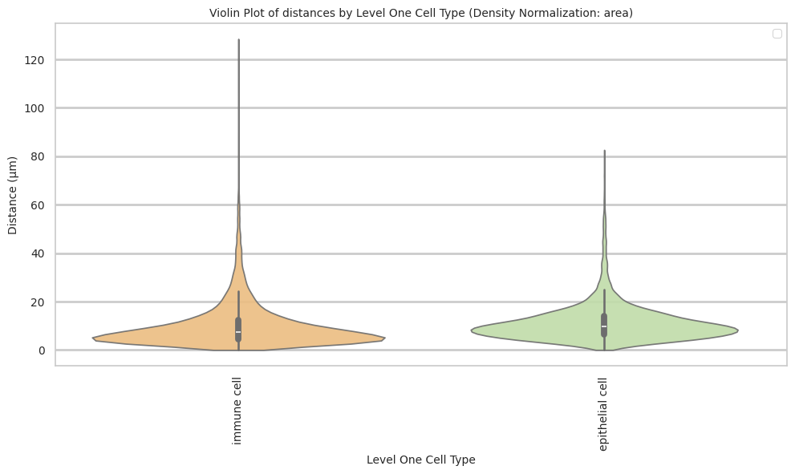
# Boxplots of distribution of distances by cell type and region.
def plot_distance_distribution_boxplots_by_region(df_all_edges_with_cell_type_level, cell_type_level, output_dir):
plt.figure(figsize=(16, 8))
plt.rcParams["svg.fonttype"] = 'none' # to store text as text, not as path
# Create categorical type with only the regions that exist in the data
available_regions = [r for r in regions if r in df_all_edges_with_cell_type_level['Unique Region'].unique()]
df_all_edges_with_cell_type_level['Unique Region'] = pd.Categorical(
df_all_edges_with_cell_type_level['Unique Region'],
categories=available_regions,
ordered=True
)
# Make box plot.
sns.boxplot(data=df_all_edges_with_cell_type_level, x=cell_type_level, y='Distance', hue='Unique Region', showfliers=False, palette='Spectral') # viridis or Spectral palette for better color distinction
font_size = 10
plt.xticks(rotation=90, ha='right', fontsize=font_size)
plt.yticks(fontsize=font_size)
plt.title(f'Distribution of distances by {cell_type_level} and region', fontsize=font_size)
plt.xlabel(f'{cell_type_level}', fontsize=font_size)
plt.ylabel('Distance (\u03bcm)', fontsize=font_size)
plt.legend(bbox_to_anchor=(1, 1), loc='upper left')
plt.tight_layout()
plt.savefig(os.path.join(output_dir, f'{dataset_dir}_distance_distribution_boxplots_by_region_{cell_type_level}.png'), dpi=300,
bbox_inches='tight',
pad_inches=0.5)
plt.savefig(os.path.join(output_dir, f'{dataset_dir}_distance_distribution_boxplots_by_region_{cell_type_level}.svg'), dpi=300,
bbox_inches='tight',
pad_inches=0.5)
plt.show()
plot_distance_distribution_boxplots_by_region(df_all_edges_with_cell_type_level, cell_type_level, os.path.join(basepath, figures_output_dir))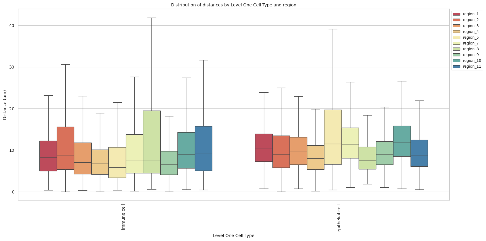
# Boxplots of distribution of distances by cell type and region.
def plot_distance_distribution_heatmap(df_all_edges_with_cell_type_level, cell_type_level, output_dir):
pivot_data = df_all_edges_with_cell_type_level.pivot_table(
values='Distance',
index=cell_type_level,
columns='Unique Region',
aggfunc='median'
)
plt.figure(figsize=(15, 10))
plt.rcParams["svg.fonttype"] = 'none' # to store text as text, not as path
sns.heatmap(pivot_data, annot=True, fmt='.1f', cmap='Spectral')
plt.title(f'Heatmap of median distances by {cell_type_level}', fontsize=12)
font_size = 10
plt.xticks(rotation=90, ha='right', fontsize=font_size)
plt.yticks(fontsize=font_size)
plt.xlabel('Unique Region', fontsize=font_size)
plt.ylabel(f'{cell_type_level}', fontsize=font_size)
plt.tight_layout()
plt.savefig(os.path.join(output_dir, f'{dataset_dir}_distance_distribution_heatmap_{cell_type_level}.png'), dpi=300,
bbox_inches='tight',
pad_inches=0.5)
plt.savefig(os.path.join(output_dir, f'{dataset_dir}_distance_distribution_heatmap_{cell_type_level}.svg'), dpi=300,
bbox_inches='tight',
pad_inches=0.5)
plt.show()
plot_distance_distribution_heatmap(df_all_edges_with_cell_type_level, cell_type_level, os.path.join(basepath, figures_output_dir))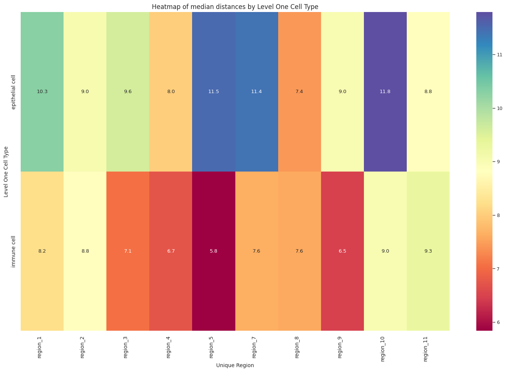
# Generate Violin Plot per unique region.
def plot_violin_plots_all_regions(df_all_edges_with_cell_type_level, cell_type_level, output_dir, density_norm="area"):
sns.set_style("whitegrid")
sns.set_context("notebook", rc={"grid.linewidth": 1})
plt.rcParams["svg.fonttype"] = 'none' # to store text as text, not as path
font_size = 10
fig, axs = plt.subplots(10, 1, figsize=(10, 20)) # Adjusted figsize for horizontal layout
fig.suptitle(f'Distance distribution per {cell_type_level} in `{dataset_dir}` (density normalization = {density_norm})', fontsize=font_size, y=1)
# Keep the sequence of Cell Types consistent across plots.
cell_types = sorted(df_all_edges_with_cell_type_level[cell_type_level].unique())
# Create a color palette based on the number of unique classes
color_palette = sns.color_palette("Spectral", n_colors=len(cell_types))
# Create a dictionary mapping class to color
class_color_dict = dict(zip(cell_types, color_palette))
for i, region in enumerate(regions):
data_reg = df_all_edges_with_cell_type_level[df_all_edges_with_cell_type_level['Unique Region'] == region]
sns.violinplot(data=data_reg, x=cell_type_level, y="Distance", density_norm=density_norm, common_norm=True, cut=0, inner="box", split=False, palette=class_color_dict, alpha=.9, ax=axs[i], hue=cell_type_level, legend=False, order=cell_types, fill=True)
axs[i].set_title(region, fontsize=font_size)
axs[i].set_xlabel('', fontsize=font_size)
axs[i].set_ylabel('Distance (\u03bcm)', fontsize=font_size)
# axs[i].tick_params(axis='x', labelrotation=90, labelsize=font_size)
# only show xtick labels for the last subplot
if i < len(regions) - 1:
axs[i].set_xticklabels([])
else:
axs[i].set_xticklabels(cell_types, fontsize=font_size, rotation=90, ha='right')
# axs[i].set_ylim(0, data_reg['Distance'].max() * 1.1) # Set y-limits to be consistent across all plots
axs[i].tick_params(axis='both', labelsize=font_size)
# Use fig.text for precise label positioning
fig.figure.text(0.5, -0.02, f'{cell_type_level}', ha='center', va='bottom', fontsize=font_size)
plt.tight_layout()
plt.savefig(os.path.join(output_dir, f'{dataset_dir}_violin_plots_all_regions_{cell_type_level}.png'), dpi=300,
bbox_inches='tight',
pad_inches=0.5)
plt.savefig(os.path.join(output_dir, f'{dataset_dir}_violin_plots_all_regions_{cell_type_level}.svg'), dpi=300,
bbox_inches='tight',
pad_inches=0.5)
plt.show()
plot_violin_plots_all_regions(df_all_edges_with_cell_type_level, cell_type_level, os.path.join(basepath, figures_output_dir), density_norm="count") # density_norm="count" or "area" can be used based on preference.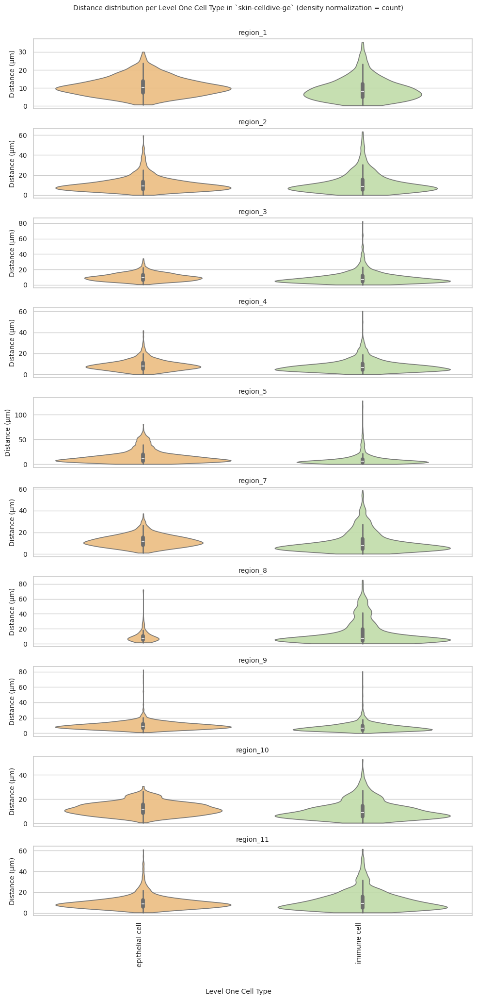
Level Two Cell Type Analysis
# Get mean, median, minimum, maximum distance per cell type in all unique regions.
cell_type_level = 'Level Two Cell Type'
df_all_edges_with_cell_type_level = df_all_edges_with_cell_types[(df_all_edges_with_cell_types['Anchor Cell Type Level'] == cell_type_level) & (df_all_edges_with_cell_types['Anchor Cell Type'] == anchor_cell_type_dict[cell_type_level])]
df_distance_stats_cell_type_level = df_all_edges_with_cell_type_level.groupby([cell_type_level, 'Unique Region']).agg(
mean_distance=('Distance', 'mean'),
median_distance=('Distance', 'median'),
min_distance=('Distance', 'min'),
max_distance=('Distance', 'max')
).reset_index()
df_distance_stats_cell_type_level| Level Two Cell Type | Unique Region | mean_distance | median_distance | min_distance | max_distance | |
|---|---|---|---|---|---|---|
| 0 | keratinocyte | region_1 | 10.942273 | 10.290975 | 0.725522 | 30.013880 |
| 1 | keratinocyte | region_10 | 12.361319 | 11.790882 | 0.707107 | 30.695997 |
| 2 | keratinocyte | region_11 | 10.196528 | 8.800049 | 0.500000 | 61.164532 |
| 3 | keratinocyte | region_2 | 10.745935 | 9.035553 | 0.017000 | 59.438487 |
| 4 | keratinocyte | region_3 | 10.267738 | 9.600986 | 0.756604 | 34.270687 |
| 5 | keratinocyte | region_4 | 8.793482 | 8.015610 | 0.157318 | 41.847939 |
| 6 | keratinocyte | region_5 | 15.737377 | 11.491433 | 0.443152 | 81.273438 |
| 7 | keratinocyte | region_7 | 12.058310 | 11.410651 | 1.008021 | 37.367765 |
| 8 | keratinocyte | region_8 | 9.839488 | 7.435609 | 1.840557 | 72.194326 |
| 9 | keratinocyte | region_9 | 9.762396 | 9.006318 | 1.027511 | 82.574584 |
| 10 | macrophage | region_1 | 12.153733 | 11.313708 | 1.373964 | 33.791712 |
| 11 | macrophage | region_10 | 13.729961 | 11.883401 | 0.943280 | 37.168535 |
| 12 | macrophage | region_11 | 13.436212 | 13.851233 | 2.692582 | 35.541722 |
| 13 | macrophage | region_2 | 9.360803 | 8.807030 | 0.000000 | 25.428822 |
| 14 | macrophage | region_3 | 15.824493 | 10.586142 | 2.624839 | 82.592541 |
| 15 | macrophage | region_4 | 10.673730 | 7.864254 | 0.707107 | 60.328360 |
| 16 | macrophage | region_5 | 18.030333 | 10.868533 | 1.105341 | 128.413083 |
| 17 | macrophage | region_7 | 12.524120 | 9.291776 | 1.000000 | 42.750272 |
| 18 | macrophage | region_8 | 21.218305 | 10.655786 | 1.794931 | 84.945093 |
| 19 | macrophage | region_9 | 9.206533 | 7.681363 | 0.833600 | 57.864155 |
| 20 | t cell | region_1 | 8.851605 | 7.679430 | 0.321218 | 35.549790 |
| 21 | t cell | region_10 | 10.834249 | 8.697919 | 0.500000 | 52.648323 |
| 22 | t cell | region_11 | 11.911482 | 9.146366 | 0.457433 | 61.572358 |
| 23 | t cell | region_2 | 12.195435 | 8.816336 | 0.000000 | 63.424592 |
| 24 | t cell | region_3 | 8.925282 | 6.864764 | 0.264401 | 64.822835 |
| 25 | t cell | region_4 | 7.970098 | 6.587342 | 0.000000 | 50.231347 |
| 26 | t cell | region_5 | 8.817685 | 5.475750 | 0.377260 | 73.084812 |
| 27 | t cell | region_7 | 10.763346 | 7.423672 | 0.137033 | 58.771590 |
| 28 | t cell | region_8 | 14.409407 | 7.497366 | 0.590302 | 79.711982 |
| 29 | t cell | region_9 | 7.712074 | 6.400335 | 0.000000 | 80.493224 |
# Get top and bottom cell types for each unique region in the dataset.
unique_regions = df_all_edges_with_cell_type_level['Unique Region'].unique()
for region in unique_regions:
top_bottom = get_top_bottom_cell_types_by_mean(df_all_edges_with_cell_type_level, cell_type_level, region)
print(f"\nTop 5 cell types in {region}:")
print(top_bottom[0])
print(f"\nBottom 5 cell types in {region}:")
print(top_bottom[1])
Top 5 cell types in region_1:
Level Two Cell Type mean_distance
1 macrophage 12.153733
0 keratinocyte 10.942273
2 t cell 8.851605
Bottom 5 cell types in region_1:
Level Two Cell Type mean_distance
1 macrophage 12.153733
0 keratinocyte 10.942273
2 t cell 8.851605
Top 5 cell types in region_10:
Level Two Cell Type mean_distance
1 macrophage 13.729961
0 keratinocyte 12.361319
2 t cell 10.834249
Bottom 5 cell types in region_10:
Level Two Cell Type mean_distance
1 macrophage 13.729961
0 keratinocyte 12.361319
2 t cell 10.834249
Top 5 cell types in region_11:
Level Two Cell Type mean_distance
1 macrophage 13.436212
2 t cell 11.911482
0 keratinocyte 10.196528
Bottom 5 cell types in region_11:
Level Two Cell Type mean_distance
1 macrophage 13.436212
2 t cell 11.911482
0 keratinocyte 10.196528
Top 5 cell types in region_2:
Level Two Cell Type mean_distance
2 t cell 12.195435
0 keratinocyte 10.745935
1 macrophage 9.360803
Bottom 5 cell types in region_2:
Level Two Cell Type mean_distance
2 t cell 12.195435
0 keratinocyte 10.745935
1 macrophage 9.360803
Top 5 cell types in region_3:
Level Two Cell Type mean_distance
1 macrophage 15.824493
0 keratinocyte 10.267738
2 t cell 8.925282
Bottom 5 cell types in region_3:
Level Two Cell Type mean_distance
1 macrophage 15.824493
0 keratinocyte 10.267738
2 t cell 8.925282
Top 5 cell types in region_4:
Level Two Cell Type mean_distance
1 macrophage 10.673730
0 keratinocyte 8.793482
2 t cell 7.970098
Bottom 5 cell types in region_4:
Level Two Cell Type mean_distance
1 macrophage 10.673730
0 keratinocyte 8.793482
2 t cell 7.970098
Top 5 cell types in region_5:
Level Two Cell Type mean_distance
1 macrophage 18.030333
0 keratinocyte 15.737377
2 t cell 8.817685
Bottom 5 cell types in region_5:
Level Two Cell Type mean_distance
1 macrophage 18.030333
0 keratinocyte 15.737377
2 t cell 8.817685
Top 5 cell types in region_7:
Level Two Cell Type mean_distance
1 macrophage 12.524120
0 keratinocyte 12.058310
2 t cell 10.763346
Bottom 5 cell types in region_7:
Level Two Cell Type mean_distance
1 macrophage 12.524120
0 keratinocyte 12.058310
2 t cell 10.763346
Top 5 cell types in region_8:
Level Two Cell Type mean_distance
1 macrophage 21.218305
2 t cell 14.409407
0 keratinocyte 9.839488
Bottom 5 cell types in region_8:
Level Two Cell Type mean_distance
1 macrophage 21.218305
2 t cell 14.409407
0 keratinocyte 9.839488
Top 5 cell types in region_9:
Level Two Cell Type mean_distance
0 keratinocyte 9.762396
1 macrophage 9.206533
2 t cell 7.712074
Bottom 5 cell types in region_9:
Level Two Cell Type mean_distance
0 keratinocyte 9.762396
1 macrophage 9.206533
2 t cell 7.712074# Get top and bottom cell types for each unique region in the dataset.
unique_regions = df_all_edges_with_cell_type_level['Unique Region'].unique()
for region in unique_regions:
top_bottom = get_top_bottom_cell_types_by_median(df_all_edges_with_cell_type_level, cell_type_level, region)
print(f"\nTop 5 cell types in {region}:")
print(top_bottom[0])
print(f"\nBottom 5 cell types in {region}:")
print(top_bottom[1])
Top 5 cell types in region_1:
Level Two Cell Type median_distance
1 macrophage 11.313708
0 keratinocyte 10.290975
2 t cell 7.679430
Bottom 5 cell types in region_1:
Level Two Cell Type median_distance
1 macrophage 11.313708
0 keratinocyte 10.290975
2 t cell 7.679430
Top 5 cell types in region_10:
Level Two Cell Type median_distance
1 macrophage 11.883401
0 keratinocyte 11.790882
2 t cell 8.697919
Bottom 5 cell types in region_10:
Level Two Cell Type median_distance
1 macrophage 11.883401
0 keratinocyte 11.790882
2 t cell 8.697919
Top 5 cell types in region_11:
Level Two Cell Type median_distance
1 macrophage 13.851233
2 t cell 9.146366
0 keratinocyte 8.800049
Bottom 5 cell types in region_11:
Level Two Cell Type median_distance
1 macrophage 13.851233
2 t cell 9.146366
0 keratinocyte 8.800049
Top 5 cell types in region_2:
Level Two Cell Type median_distance
0 keratinocyte 9.035553
2 t cell 8.816336
1 macrophage 8.807030
Bottom 5 cell types in region_2:
Level Two Cell Type median_distance
0 keratinocyte 9.035553
2 t cell 8.816336
1 macrophage 8.807030
Top 5 cell types in region_3:
Level Two Cell Type median_distance
1 macrophage 10.586142
0 keratinocyte 9.600986
2 t cell 6.864764
Bottom 5 cell types in region_3:
Level Two Cell Type median_distance
1 macrophage 10.586142
0 keratinocyte 9.600986
2 t cell 6.864764
Top 5 cell types in region_4:
Level Two Cell Type median_distance
0 keratinocyte 8.015610
1 macrophage 7.864254
2 t cell 6.587342
Bottom 5 cell types in region_4:
Level Two Cell Type median_distance
0 keratinocyte 8.015610
1 macrophage 7.864254
2 t cell 6.587342
Top 5 cell types in region_5:
Level Two Cell Type median_distance
0 keratinocyte 11.491433
1 macrophage 10.868533
2 t cell 5.475750
Bottom 5 cell types in region_5:
Level Two Cell Type median_distance
0 keratinocyte 11.491433
1 macrophage 10.868533
2 t cell 5.475750
Top 5 cell types in region_7:
Level Two Cell Type median_distance
0 keratinocyte 11.410651
1 macrophage 9.291776
2 t cell 7.423672
Bottom 5 cell types in region_7:
Level Two Cell Type median_distance
0 keratinocyte 11.410651
1 macrophage 9.291776
2 t cell 7.423672
Top 5 cell types in region_8:
Level Two Cell Type median_distance
1 macrophage 10.655786
2 t cell 7.497366
0 keratinocyte 7.435609
Bottom 5 cell types in region_8:
Level Two Cell Type median_distance
1 macrophage 10.655786
2 t cell 7.497366
0 keratinocyte 7.435609
Top 5 cell types in region_9:
Level Two Cell Type median_distance
0 keratinocyte 9.006318
1 macrophage 7.681363
2 t cell 6.400335
Bottom 5 cell types in region_9:
Level Two Cell Type median_distance
0 keratinocyte 9.006318
1 macrophage 7.681363
2 t cell 6.400335calculate_regional_variability(df_all_edges_with_cell_type_level, cell_type_level)
Regional Variability Analysis:
Mean: Average distance in each region
Std: Standard deviation of distances
CV: Coefficient of Variation (std/mean * 100%)
mean std CV (%)
Unique Region
region_1 10.34 5.68 54.9
region_10 11.73 6.71 57.2
region_11 11.08 8.25 74.5
region_2 11.32 8.83 78.0
region_3 9.74 7.16 73.5
region_4 8.40 5.68 67.6
region_5 13.18 13.21 100.2
region_7 11.39 8.19 71.9
region_8 14.01 14.89 106.3
region_9 8.92 5.78 64.8
Cell Type Variability Analysis (sorted by CV):
mean std CV (%)
Level Two Cell Type
macrophage 13.14 13.03 99.2
t cell 9.90 9.24 93.3
keratinocyte 11.33 8.04 71.0plot_violin_cells_per_celltype(df_all_edges_with_cell_type_level, cell_type_level, os.path.join(basepath, figures_output_dir), density_norm='area')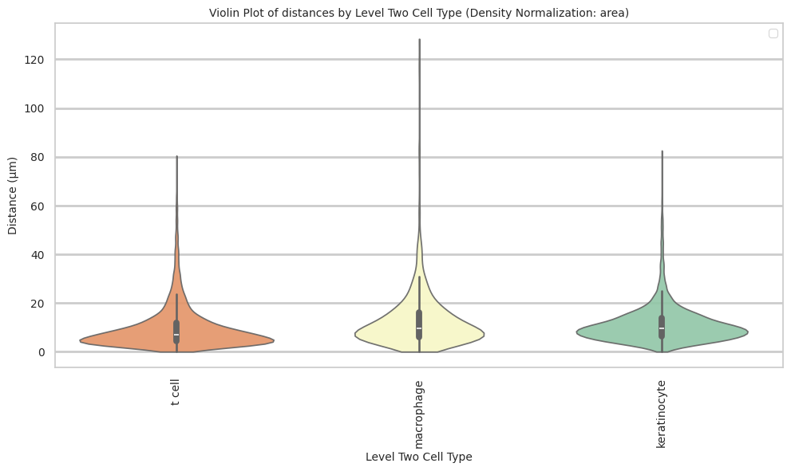
plot_distance_distribution_boxplots_by_region(df_all_edges_with_cell_type_level, cell_type_level, os.path.join(basepath, figures_output_dir))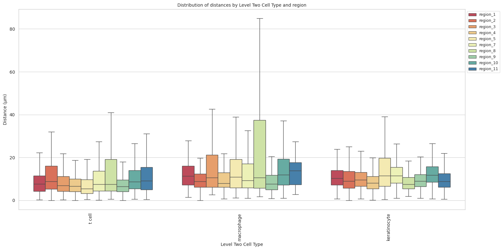
plot_distance_distribution_heatmap(df_all_edges_with_cell_type_level, cell_type_level, os.path.join(basepath, figures_output_dir))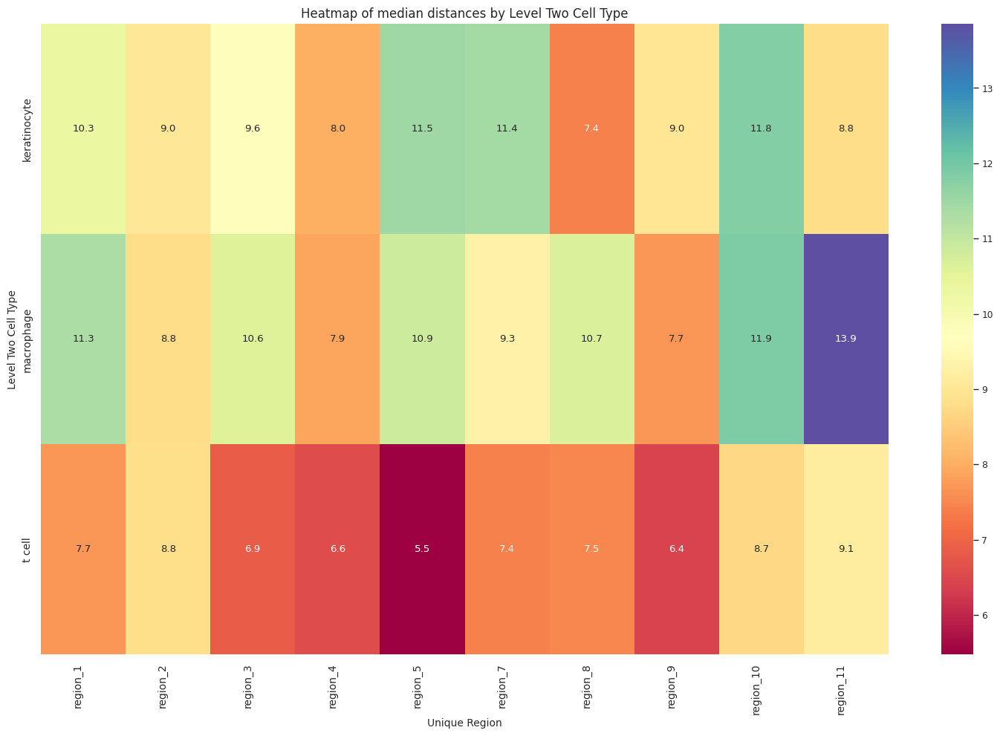
plot_violin_plots_all_regions(df_all_edges_with_cell_type_level, cell_type_level, os.path.join(basepath, figures_output_dir), density_norm="count") # Or, density_norm="count" or "area" based on preference.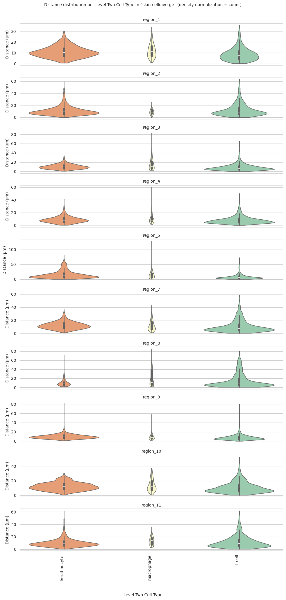
Level Three Cell Type Analysis
# Get mean, median, minimum, maximum distance per cell type in all unique regions.
cell_type_level = 'Level Three Cell Type'
df_all_edges_with_cell_type_level = df_all_edges_with_cell_types[(df_all_edges_with_cell_types['Anchor Cell Type Level'] == cell_type_level) & (df_all_edges_with_cell_types['Anchor Cell Type'] == anchor_cell_type_dict[cell_type_level])]
df_distance_stats_cell_type_level = df_all_edges_with_cell_type_level.groupby([cell_type_level, 'Unique Region']).agg(
mean_distance=('Distance', 'mean'),
median_distance=('Distance', 'median'),
min_distance=('Distance', 'min'),
max_distance=('Distance', 'max')
).reset_index()
df_distance_stats_cell_type_level| Level Three Cell Type | Unique Region | mean_distance | median_distance | min_distance | max_distance | |
|---|---|---|---|---|---|---|
| 0 | keratinocyte:ddb2+ | region_1 | 10.886045 | 10.001243 | 1.255159 | 26.832704 |
| 1 | keratinocyte:ddb2+ | region_10 | 11.629010 | 11.056795 | 0.707107 | 27.110916 |
| 2 | keratinocyte:ddb2+ | region_11 | 10.904713 | 9.290249 | 0.500000 | 61.164532 |
| 3 | keratinocyte:ddb2+ | region_2 | 9.904681 | 8.860067 | 0.225471 | 40.017169 |
| 4 | keratinocyte:ddb2+ | region_3 | 9.982988 | 9.486833 | 1.085756 | 27.698531 |
| 5 | keratinocyte:ddb2+ | region_4 | 8.325188 | 7.424621 | 0.236174 | 39.442424 |
| 6 | keratinocyte:ddb2+ | region_5 | 16.566213 | 12.103718 | 0.515830 | 81.273438 |
| 7 | keratinocyte:ddb2+ | region_7 | 11.048429 | 10.779681 | 1.704540 | 29.504403 |
| 8 | keratinocyte:ddb2+ | region_8 | 9.996099 | 7.452943 | 2.340808 | 72.081273 |
| 9 | keratinocyte:ddb2+ | region_9 | 9.230936 | 8.503737 | 1.072485 | 65.549106 |
| 10 | keratinocyte:ki67+ proliferating | region_1 | 11.107341 | 10.514693 | 1.043427 | 30.013880 |
| 11 | keratinocyte:ki67+ proliferating | region_10 | 12.695907 | 12.298586 | 1.414214 | 30.695997 |
| 12 | keratinocyte:ki67+ proliferating | region_11 | 8.990549 | 8.309499 | 1.000000 | 48.869088 |
| 13 | keratinocyte:ki67+ proliferating | region_2 | 11.038204 | 9.240767 | 0.017000 | 59.438487 |
| 14 | keratinocyte:ki67+ proliferating | region_3 | 11.058889 | 10.331021 | 1.582487 | 34.270687 |
| 15 | keratinocyte:ki67+ proliferating | region_4 | 8.975061 | 8.276537 | 0.157318 | 41.847939 |
| 16 | keratinocyte:ki67+ proliferating | region_5 | 12.655427 | 10.068849 | 0.610227 | 66.225392 |
| 17 | keratinocyte:ki67+ proliferating | region_7 | 12.502275 | 11.833625 | 1.008021 | 37.367765 |
| 18 | keratinocyte:ki67+ proliferating | region_8 | 10.643492 | 7.849747 | 1.840557 | 32.494578 |
| 19 | keratinocyte:ki67+ proliferating | region_9 | 10.018056 | 9.308546 | 1.027511 | 37.067506 |
| 20 | keratinocyte:p53+ | region_1 | 9.158517 | 8.938114 | 0.725522 | 27.715064 |
| 21 | keratinocyte:p53+ | region_10 | 11.131305 | 9.739514 | 2.091030 | 30.468399 |
| 22 | keratinocyte:p53+ | region_11 | 8.154073 | 8.066404 | 1.813728 | 18.301502 |
| 23 | keratinocyte:p53+ | region_2 | 8.990985 | 7.118084 | 2.137080 | 48.503450 |
| 24 | keratinocyte:p53+ | region_3 | 8.552662 | 8.046103 | 0.756604 | 23.221158 |
| 25 | keratinocyte:p53+ | region_4 | 9.004084 | 7.899297 | 0.262206 | 30.389862 |
| 26 | keratinocyte:p53+ | region_5 | 18.590460 | 13.883794 | 0.443152 | 81.273438 |
| 27 | keratinocyte:p53+ | region_7 | 9.813049 | 8.377985 | 1.187188 | 29.756854 |
| 28 | keratinocyte:p53+ | region_8 | 9.087552 | 7.159545 | 2.103227 | 72.194326 |
| 29 | keratinocyte:p53+ | region_9 | 10.087026 | 8.807506 | 1.717842 | 82.574584 |
| 30 | macrophage | region_1 | 12.153733 | 11.313708 | 1.373964 | 33.791712 |
| 31 | macrophage | region_10 | 13.729961 | 11.883401 | 0.943280 | 37.168535 |
| 32 | macrophage | region_11 | 13.436212 | 13.851233 | 2.692582 | 35.541722 |
| 33 | macrophage | region_2 | 9.360803 | 8.807030 | 0.000000 | 25.428822 |
| 34 | macrophage | region_3 | 15.824493 | 10.586142 | 2.624839 | 82.592541 |
| 35 | macrophage | region_4 | 10.673730 | 7.864254 | 0.707107 | 60.328360 |
| 36 | macrophage | region_5 | 18.030333 | 10.868533 | 1.105341 | 128.413083 |
| 37 | macrophage | region_7 | 12.524120 | 9.291776 | 1.000000 | 42.750272 |
| 38 | macrophage | region_8 | 21.218305 | 10.655786 | 1.794931 | 84.945093 |
| 39 | macrophage | region_9 | 9.206533 | 7.681363 | 0.833600 | 57.864155 |
| 40 | t cell:cd4+ | region_1 | 8.869032 | 7.679430 | 0.321218 | 35.549790 |
| 41 | t cell:cd4+ | region_10 | 10.829794 | 8.514538 | 0.500000 | 43.185110 |
| 42 | t cell:cd4+ | region_11 | 12.440926 | 9.661269 | 0.457433 | 61.572358 |
| 43 | t cell:cd4+ | region_2 | 12.332629 | 8.831761 | 0.000000 | 63.424592 |
| 44 | t cell:cd4+ | region_3 | 9.109696 | 6.992530 | 0.264401 | 64.822835 |
| 45 | t cell:cd4+ | region_4 | 8.072624 | 6.564481 | 0.000000 | 42.837025 |
| 46 | t cell:cd4+ | region_5 | 8.658396 | 5.342218 | 0.377260 | 73.084812 |
| 47 | t cell:cd4+ | region_7 | 11.133925 | 7.529053 | 0.137033 | 58.771590 |
| 48 | t cell:cd4+ | region_8 | 14.456483 | 7.528339 | 0.590302 | 79.711982 |
| 49 | t cell:cd4+ | region_9 | 7.732470 | 6.392814 | 0.000000 | 80.493224 |
| 50 | t cell:cd8+ | region_1 | 8.244478 | 8.892451 | 3.640055 | 11.552955 |
| 51 | t cell:cd8+ | region_10 | 7.954718 | 7.856321 | 1.675344 | 13.143165 |
| 52 | t cell:cd8+ | region_11 | 6.451790 | 4.291658 | 1.500000 | 22.426085 |
| 53 | t cell:cd8+ | region_2 | 7.394594 | 6.544165 | 0.275278 | 19.435705 |
| 54 | t cell:cd8+ | region_3 | 5.435333 | 4.130929 | 1.581139 | 12.654643 |
| 55 | t cell:cd8+ | region_4 | 7.850566 | 6.707015 | 0.677197 | 50.231347 |
| 56 | t cell:cd8+ | region_5 | 8.027796 | 6.068425 | 1.270120 | 48.840852 |
| 57 | t cell:cd8+ | region_7 | 8.015370 | 5.935751 | 2.058033 | 38.971945 |
| 58 | t cell:cd8+ | region_8 | 11.123286 | 6.025874 | 1.311488 | 28.376927 |
| 59 | t cell:cd8+ | region_9 | 6.739554 | 6.994015 | 2.087387 | 11.492606 |
| 60 | t cell:regulatory | region_1 | 8.787226 | 7.174825 | 0.500000 | 24.083189 |
| 61 | t cell:regulatory | region_10 | 11.312539 | 9.433981 | 0.500000 | 52.648323 |
| 62 | t cell:regulatory | region_11 | 7.093294 | 5.994383 | 1.383224 | 37.513331 |
| 63 | t cell:regulatory | region_2 | 11.383476 | 11.280465 | 3.814076 | 22.121709 |
| 64 | t cell:regulatory | region_3 | 8.460577 | 6.972035 | 1.118034 | 28.164694 |
| 65 | t cell:regulatory | region_4 | 7.487842 | 6.726198 | 0.435259 | 25.976812 |
| 66 | t cell:regulatory | region_5 | 10.382237 | 7.335038 | 1.140175 | 55.273500 |
| 67 | t cell:regulatory | region_7 | 7.311479 | 6.963491 | 1.311488 | 22.916485 |
| 68 | t cell:regulatory | region_8 | 14.454051 | 6.118109 | 1.414214 | 53.684262 |
| 69 | t cell:regulatory | region_9 | 7.522635 | 6.563314 | 2.061553 | 28.242256 |
# Get top and bottom cell types for each unique region in the dataset.
unique_regions = df_all_edges_with_cell_type_level['Unique Region'].unique()
for region in unique_regions:
top_bottom = get_top_bottom_cell_types_by_mean(df_all_edges_with_cell_type_level, cell_type_level, region)
print(f"\nTop 5 cell types in {region}:")
print(top_bottom[0])
print(f"\nBottom 5 cell types in {region}:")
print(top_bottom[1])
Top 5 cell types in region_1:
Level Three Cell Type mean_distance
3 macrophage 12.153733
1 keratinocyte:ki67+ proliferating 11.107341
0 keratinocyte:ddb2+ 10.886045
2 keratinocyte:p53+ 9.158517
4 t cell:cd4+ 8.869032
Bottom 5 cell types in region_1:
Level Three Cell Type mean_distance
0 keratinocyte:ddb2+ 10.886045
2 keratinocyte:p53+ 9.158517
4 t cell:cd4+ 8.869032
6 t cell:regulatory 8.787226
5 t cell:cd8+ 8.244478
Top 5 cell types in region_10:
Level Three Cell Type mean_distance
3 macrophage 13.729961
1 keratinocyte:ki67+ proliferating 12.695907
0 keratinocyte:ddb2+ 11.629010
6 t cell:regulatory 11.312539
2 keratinocyte:p53+ 11.131305
Bottom 5 cell types in region_10:
Level Three Cell Type mean_distance
0 keratinocyte:ddb2+ 11.629010
6 t cell:regulatory 11.312539
2 keratinocyte:p53+ 11.131305
4 t cell:cd4+ 10.829794
5 t cell:cd8+ 7.954718
Top 5 cell types in region_11:
Level Three Cell Type mean_distance
3 macrophage 13.436212
4 t cell:cd4+ 12.440926
0 keratinocyte:ddb2+ 10.904713
1 keratinocyte:ki67+ proliferating 8.990549
2 keratinocyte:p53+ 8.154073
Bottom 5 cell types in region_11:
Level Three Cell Type mean_distance
0 keratinocyte:ddb2+ 10.904713
1 keratinocyte:ki67+ proliferating 8.990549
2 keratinocyte:p53+ 8.154073
6 t cell:regulatory 7.093294
5 t cell:cd8+ 6.451790
Top 5 cell types in region_2:
Level Three Cell Type mean_distance
4 t cell:cd4+ 12.332629
6 t cell:regulatory 11.383476
1 keratinocyte:ki67+ proliferating 11.038204
0 keratinocyte:ddb2+ 9.904681
3 macrophage 9.360803
Bottom 5 cell types in region_2:
Level Three Cell Type mean_distance
1 keratinocyte:ki67+ proliferating 11.038204
0 keratinocyte:ddb2+ 9.904681
3 macrophage 9.360803
2 keratinocyte:p53+ 8.990985
5 t cell:cd8+ 7.394594
Top 5 cell types in region_3:
Level Three Cell Type mean_distance
3 macrophage 15.824493
1 keratinocyte:ki67+ proliferating 11.058889
0 keratinocyte:ddb2+ 9.982988
4 t cell:cd4+ 9.109696
2 keratinocyte:p53+ 8.552662
Bottom 5 cell types in region_3:
Level Three Cell Type mean_distance
0 keratinocyte:ddb2+ 9.982988
4 t cell:cd4+ 9.109696
2 keratinocyte:p53+ 8.552662
6 t cell:regulatory 8.460577
5 t cell:cd8+ 5.435333
Top 5 cell types in region_4:
Level Three Cell Type mean_distance
3 macrophage 10.673730
2 keratinocyte:p53+ 9.004084
1 keratinocyte:ki67+ proliferating 8.975061
0 keratinocyte:ddb2+ 8.325188
4 t cell:cd4+ 8.072624
Bottom 5 cell types in region_4:
Level Three Cell Type mean_distance
1 keratinocyte:ki67+ proliferating 8.975061
0 keratinocyte:ddb2+ 8.325188
4 t cell:cd4+ 8.072624
5 t cell:cd8+ 7.850566
6 t cell:regulatory 7.487842
Top 5 cell types in region_5:
Level Three Cell Type mean_distance
2 keratinocyte:p53+ 18.590460
3 macrophage 18.030333
0 keratinocyte:ddb2+ 16.566213
1 keratinocyte:ki67+ proliferating 12.655427
6 t cell:regulatory 10.382237
Bottom 5 cell types in region_5:
Level Three Cell Type mean_distance
0 keratinocyte:ddb2+ 16.566213
1 keratinocyte:ki67+ proliferating 12.655427
6 t cell:regulatory 10.382237
4 t cell:cd4+ 8.658396
5 t cell:cd8+ 8.027796
Top 5 cell types in region_7:
Level Three Cell Type mean_distance
3 macrophage 12.524120
1 keratinocyte:ki67+ proliferating 12.502275
4 t cell:cd4+ 11.133925
0 keratinocyte:ddb2+ 11.048429
2 keratinocyte:p53+ 9.813049
Bottom 5 cell types in region_7:
Level Three Cell Type mean_distance
4 t cell:cd4+ 11.133925
0 keratinocyte:ddb2+ 11.048429
2 keratinocyte:p53+ 9.813049
5 t cell:cd8+ 8.015370
6 t cell:regulatory 7.311479
Top 5 cell types in region_8:
Level Three Cell Type mean_distance
3 macrophage 21.218305
4 t cell:cd4+ 14.456483
6 t cell:regulatory 14.454051
5 t cell:cd8+ 11.123286
1 keratinocyte:ki67+ proliferating 10.643492
Bottom 5 cell types in region_8:
Level Three Cell Type mean_distance
6 t cell:regulatory 14.454051
5 t cell:cd8+ 11.123286
1 keratinocyte:ki67+ proliferating 10.643492
0 keratinocyte:ddb2+ 9.996099
2 keratinocyte:p53+ 9.087552
Top 5 cell types in region_9:
Level Three Cell Type mean_distance
2 keratinocyte:p53+ 10.087026
1 keratinocyte:ki67+ proliferating 10.018056
0 keratinocyte:ddb2+ 9.230936
3 macrophage 9.206533
4 t cell:cd4+ 7.732470
Bottom 5 cell types in region_9:
Level Three Cell Type mean_distance
0 keratinocyte:ddb2+ 9.230936
3 macrophage 9.206533
4 t cell:cd4+ 7.732470
6 t cell:regulatory 7.522635
5 t cell:cd8+ 6.739554# Get top and bottom cell types for each unique region in the dataset.
unique_regions = df_all_edges_with_cell_type_level['Unique Region'].unique()
for region in unique_regions:
top_bottom = get_top_bottom_cell_types_by_median(df_all_edges_with_cell_type_level, cell_type_level, region)
print(f"\nTop 5 cell types in {region}:")
print(top_bottom[0])
print(f"\nBottom 5 cell types in {region}:")
print(top_bottom[1])
Top 5 cell types in region_1:
Level Three Cell Type median_distance
3 macrophage 11.313708
1 keratinocyte:ki67+ proliferating 10.514693
0 keratinocyte:ddb2+ 10.001243
2 keratinocyte:p53+ 8.938114
5 t cell:cd8+ 8.892451
Bottom 5 cell types in region_1:
Level Three Cell Type median_distance
0 keratinocyte:ddb2+ 10.001243
2 keratinocyte:p53+ 8.938114
5 t cell:cd8+ 8.892451
4 t cell:cd4+ 7.679430
6 t cell:regulatory 7.174825
Top 5 cell types in region_10:
Level Three Cell Type median_distance
1 keratinocyte:ki67+ proliferating 12.298586
3 macrophage 11.883401
0 keratinocyte:ddb2+ 11.056795
2 keratinocyte:p53+ 9.739514
6 t cell:regulatory 9.433981
Bottom 5 cell types in region_10:
Level Three Cell Type median_distance
0 keratinocyte:ddb2+ 11.056795
2 keratinocyte:p53+ 9.739514
6 t cell:regulatory 9.433981
4 t cell:cd4+ 8.514538
5 t cell:cd8+ 7.856321
Top 5 cell types in region_11:
Level Three Cell Type median_distance
3 macrophage 13.851233
4 t cell:cd4+ 9.661269
0 keratinocyte:ddb2+ 9.290249
1 keratinocyte:ki67+ proliferating 8.309499
2 keratinocyte:p53+ 8.066404
Bottom 5 cell types in region_11:
Level Three Cell Type median_distance
0 keratinocyte:ddb2+ 9.290249
1 keratinocyte:ki67+ proliferating 8.309499
2 keratinocyte:p53+ 8.066404
6 t cell:regulatory 5.994383
5 t cell:cd8+ 4.291658
Top 5 cell types in region_2:
Level Three Cell Type median_distance
6 t cell:regulatory 11.280465
1 keratinocyte:ki67+ proliferating 9.240767
0 keratinocyte:ddb2+ 8.860067
4 t cell:cd4+ 8.831761
3 macrophage 8.807030
Bottom 5 cell types in region_2:
Level Three Cell Type median_distance
0 keratinocyte:ddb2+ 8.860067
4 t cell:cd4+ 8.831761
3 macrophage 8.807030
2 keratinocyte:p53+ 7.118084
5 t cell:cd8+ 6.544165
Top 5 cell types in region_3:
Level Three Cell Type median_distance
3 macrophage 10.586142
1 keratinocyte:ki67+ proliferating 10.331021
0 keratinocyte:ddb2+ 9.486833
2 keratinocyte:p53+ 8.046103
4 t cell:cd4+ 6.992530
Bottom 5 cell types in region_3:
Level Three Cell Type median_distance
0 keratinocyte:ddb2+ 9.486833
2 keratinocyte:p53+ 8.046103
4 t cell:cd4+ 6.992530
6 t cell:regulatory 6.972035
5 t cell:cd8+ 4.130929
Top 5 cell types in region_4:
Level Three Cell Type median_distance
1 keratinocyte:ki67+ proliferating 8.276537
2 keratinocyte:p53+ 7.899297
3 macrophage 7.864254
0 keratinocyte:ddb2+ 7.424621
6 t cell:regulatory 6.726198
Bottom 5 cell types in region_4:
Level Three Cell Type median_distance
3 macrophage 7.864254
0 keratinocyte:ddb2+ 7.424621
6 t cell:regulatory 6.726198
5 t cell:cd8+ 6.707015
4 t cell:cd4+ 6.564481
Top 5 cell types in region_5:
Level Three Cell Type median_distance
2 keratinocyte:p53+ 13.883794
0 keratinocyte:ddb2+ 12.103718
3 macrophage 10.868533
1 keratinocyte:ki67+ proliferating 10.068849
6 t cell:regulatory 7.335038
Bottom 5 cell types in region_5:
Level Three Cell Type median_distance
3 macrophage 10.868533
1 keratinocyte:ki67+ proliferating 10.068849
6 t cell:regulatory 7.335038
5 t cell:cd8+ 6.068425
4 t cell:cd4+ 5.342218
Top 5 cell types in region_7:
Level Three Cell Type median_distance
1 keratinocyte:ki67+ proliferating 11.833625
0 keratinocyte:ddb2+ 10.779681
3 macrophage 9.291776
2 keratinocyte:p53+ 8.377985
4 t cell:cd4+ 7.529053
Bottom 5 cell types in region_7:
Level Three Cell Type median_distance
3 macrophage 9.291776
2 keratinocyte:p53+ 8.377985
4 t cell:cd4+ 7.529053
6 t cell:regulatory 6.963491
5 t cell:cd8+ 5.935751
Top 5 cell types in region_8:
Level Three Cell Type median_distance
3 macrophage 10.655786
1 keratinocyte:ki67+ proliferating 7.849747
4 t cell:cd4+ 7.528339
0 keratinocyte:ddb2+ 7.452943
2 keratinocyte:p53+ 7.159545
Bottom 5 cell types in region_8:
Level Three Cell Type median_distance
4 t cell:cd4+ 7.528339
0 keratinocyte:ddb2+ 7.452943
2 keratinocyte:p53+ 7.159545
6 t cell:regulatory 6.118109
5 t cell:cd8+ 6.025874
Top 5 cell types in region_9:
Level Three Cell Type median_distance
1 keratinocyte:ki67+ proliferating 9.308546
2 keratinocyte:p53+ 8.807506
0 keratinocyte:ddb2+ 8.503737
3 macrophage 7.681363
5 t cell:cd8+ 6.994015
Bottom 5 cell types in region_9:
Level Three Cell Type median_distance
0 keratinocyte:ddb2+ 8.503737
3 macrophage 7.681363
5 t cell:cd8+ 6.994015
6 t cell:regulatory 6.563314
4 t cell:cd4+ 6.392814calculate_regional_variability(df_all_edges_with_cell_type_level, cell_type_level)
Regional Variability Analysis:
Mean: Average distance in each region
Std: Standard deviation of distances
CV: Coefficient of Variation (std/mean * 100%)
mean std CV (%)
Unique Region
region_1 10.34 5.68 54.9
region_10 11.73 6.71 57.2
region_11 11.08 8.25 74.5
region_2 11.32 8.83 78.0
region_3 9.74 7.16 73.5
region_4 8.40 5.68 67.6
region_5 13.18 13.21 100.2
region_7 11.39 8.19 71.9
region_8 14.01 14.89 106.3
region_9 8.92 5.78 64.8
Cell Type Variability Analysis (sorted by CV):
mean std CV (%)
Level Three Cell Type
macrophage 13.14 13.03 99.2
t cell:cd4+ 10.09 9.48 94.0
keratinocyte:p53+ 12.61 11.55 91.6
t cell:regulatory 8.75 7.19 82.2
t cell:cd8+ 7.53 6.14 81.5
keratinocyte:ddb2+ 11.57 8.94 77.3
keratinocyte:ki67+ proliferating 10.91 6.36 58.3plot_violin_cells_per_celltype(df_all_edges_with_cell_type_level, cell_type_level, os.path.join(basepath, figures_output_dir), density_norm='area')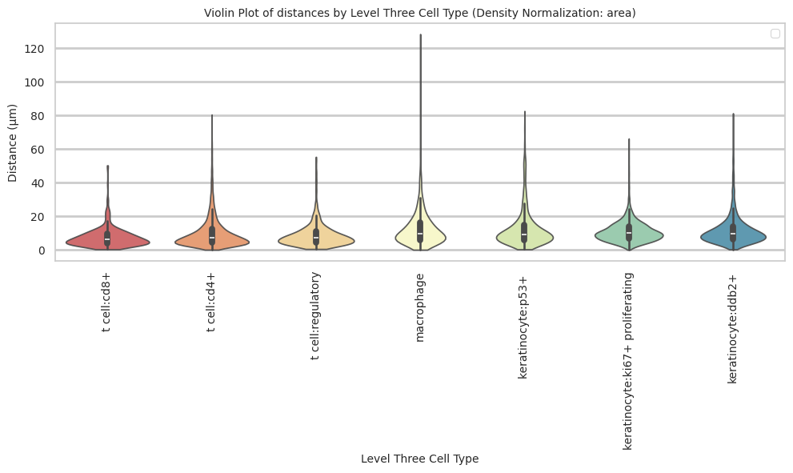
plot_distance_distribution_boxplots_by_region(df_all_edges_with_cell_type_level, cell_type_level, os.path.join(basepath, figures_output_dir))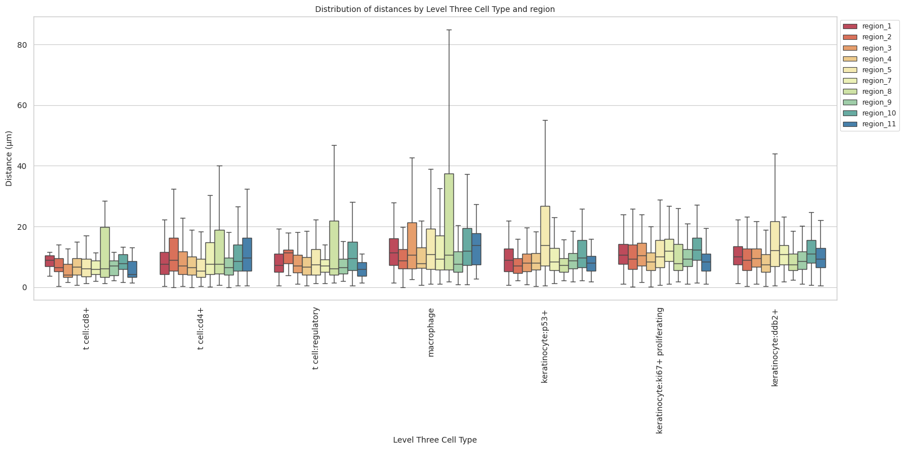
plot_distance_distribution_heatmap(df_all_edges_with_cell_type_level, cell_type_level, os.path.join(basepath, figures_output_dir))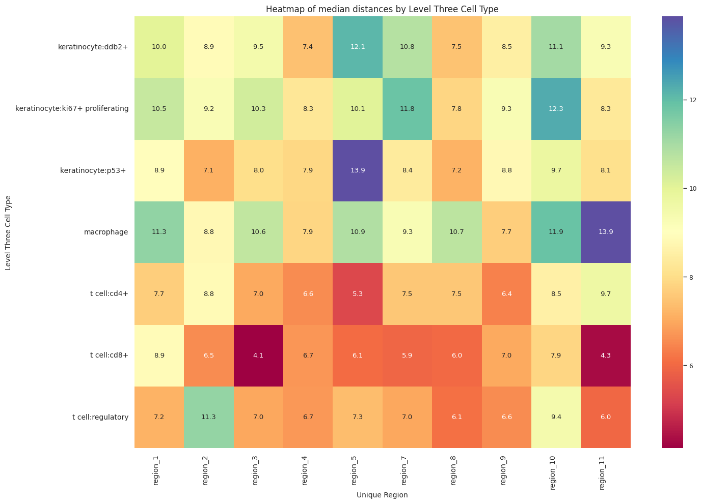
plot_violin_plots_all_regions(df_all_edges_with_cell_type_level, cell_type_level, os.path.join(basepath, figures_output_dir), density_norm="count") # Or, density_norm="count" or "area" based on preference.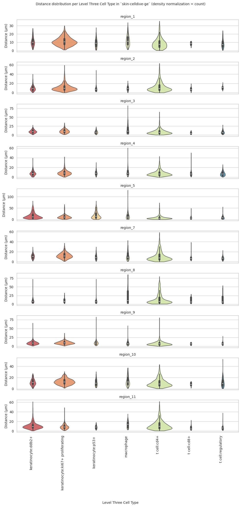